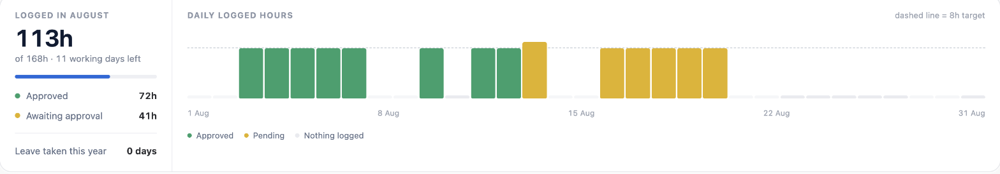
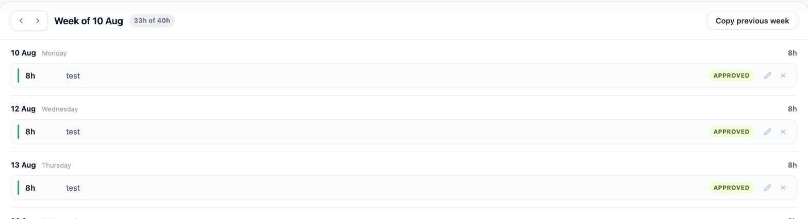
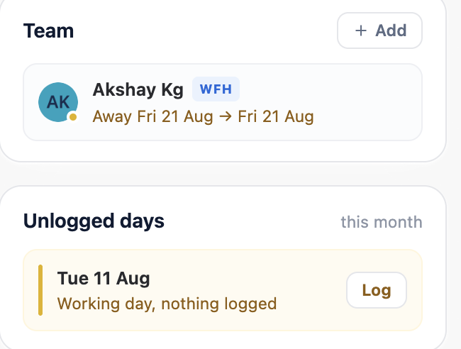

Summary & Missing Days
Your month at a glance, your week, your leave, and where everybody is
The Summary tab answers two questions: how is my own month going, and where is everybody. It is a personal view — for team and project reporting, see Reports & Exports.
It is laid out in two columns. The left is your work, read top to bottom: the month, this week, your leave. The right is context you glance at rather than work through: the people you are watching, and the days you have not logged.
1. The month overview
One headline figure — everything you have logged this month — against a target of your working days multiplied by the site's hours per day, with how many working days are left to close the gap.
Underneath, the same total split by state:
| Row | What it counts |
|---|---|
| Approved | Approved and auto-approved time |
| Awaiting approval | Submitted and still waiting for a decision |
| Sent back | Rejected time, shown only when there is some |
| Leave taken this year | Approved leave days so far this calendar year |
Sent back time is not counted in the headline total. It is reported so you know it needs attention, but work that has to be redone is not logged time. The same rule applies everywhere in the app.
These are totals by state, not by project. For a breakdown by project, cost centre or person — and the billable split — use the Breakdown view in Reports, which is available to approvers and project administrators.

2. The daily chart
One bar per day of the month, beside the totals. A dashed line marks your daily target.
Every calendar day is drawn, including the empty ones — the gaps are the point. A chart that showed only the days you logged against would make a patchy month look identical to a complete one.
| Bar | Meaning |
|---|---|
| Green | Everything on that day is approved |
| Amber | Some of that day is still awaiting approval |
| Flat grey stub | Nothing logged that day |
A day with a mix of both is drawn amber: the unfinished part is the part you can act on. Its height is still the whole day.
Bars are scaled with headroom above the target rather than against it, so a day you ran over is visibly taller than one that exactly hit the target rather than being clipped flat to the same height. Hovering a bar gives the date and the exact total.
3. My week
This week's entries, grouped under each day with that day's running total — the question being asked of this list is nearly always "is Tuesday complete?" rather than "what is my fourteenth entry".
The header carries the week total against the week's target, arrows to step between weeks, Copy previous week, and — on sites that approve by the week — Submit week. See Logging Time for what copying does and when it refuses, and Weekly Submission for submitting.
Each entry row shows its duration, project, issue and description, a status pill, and buttons to edit or delete it. An entry Jira could not sync carries a sync warning with the reason on hover.
On a locked day the edit and delete buttons are disabled rather than removed, so it is clear the entry exists and is simply closed to changes.

4. My leave
Your own leave requests with their state, and the allowance they draw on — "11 of 25 days used".
The allowance counts only leave types that have an entitlement. A type with no allowance configured is left out rather than counted as zero, which would quietly understate how much of your real allowance is gone.
Pending requests can be cancelled here. History on any request opens the decision trail, including which projects have decided and which have not, and the comment whoever decided it left.
Applying for leave starts from the Calendar.
5. Unlogged days
Working days this month with nothing logged against them, in the right-hand column. Each is a row with its own Log button, which opens the log form already set to that date.
Days off, public holidays and approved leave are never listed, and neither is today — a day is not missing until it is over.
The card disappears entirely when there is nothing missing, so a complete month is silent rather than reassuring you at length.

6. Team
The people you have pinned, shown with each person's work mode, their status, and any upcoming leave. This is what the section shows at rest — no picking a project first.
A dot on each avatar summarises the same thing at a glance: amber for somebody away, green for somebody with a status set, grey where nothing is known. The line underneath always says it in words too, so nothing depends on the colour.
Where somebody has both a status and upcoming leave, the leave is shown: it is the thing that changes whether you contact them.
7. Finding people to pin
Add reveals a project picker and, where one exists, a team picker. Star anybody to pin them; the pickers stay out of the way the rest of the time.
Which projects you can pick follows your Jira access — you never see people on a project you cannot already see.
It works without any setup. With no team configured, the list is everyone who has logged time on that project in the last 90 days. That is derived rather than declared, so it stays current on its own, and the screen says when a list came from there.
| Where the list comes from | When |
|---|---|
| Recent contributors | The default — no team has been set up, or a team exists but has no Atlassian group bound |
| An Atlassian group | A team was set up in Project Settings and a group bound to it. A deliberate list always wins over the derived one |
A project nobody has logged time against, and with no group bound, genuinely has nobody to show — and says so rather than looking broken.

8. Status and work mode
Set a short status message to say what you are focused on, and mark a day's work mode from the Calendar. Both are visible to colleagues who can see you here.
Pins are personal to you — pinning somebody does not tell them, and does not change what either of you can see.
9. Templates
Your personal templates: create, edit, and apply them to a date. These belong to you alone.
The section is collapsed to a single row, with the number you have saved on the heading. Click it to open.
Templates shared with a whole project are managed in Project Settings instead. Both kinds work the same way — see Time Templates.
10. History
Everything of yours that has been decided — time and leave, approved, auto-approved, rejected or cancelled. Collapsed by default; click the heading to open it.
It loads only when opened, and pages ten at a time. Time and leave are listed side by side and page independently, so one running out does not stop the other.
Each row carries the reason the decider gave, where they gave one, in red for a rejection. That comment lives in the audit trail rather than on the record itself, so it is fetched alongside.
In weekly mode a third list appears for weeks. It has to: rejecting a week sends its entries back to draft so they can be fixed, which means the entry list holds no record of the rejection at all — the week does, comment and all.
Work still waiting on somebody is not here — that is live, and lives in My leave, My week and the week-submissions gadget. History is the record of what already happened.
11. When something is sent back
A rejection shows as a red sent back row in the alert strip at the top of the Hub, counting rejected time and leave from the last fortnight, with a link down to the History section.
You are also emailed, if email is configured, with whatever comment the approver left. A rejected time entry becomes editable again so you can correct and resubmit it; a rejected week goes back to draft — see Weekly Submission.